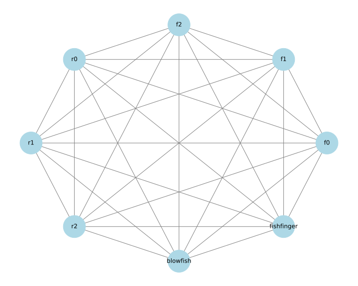

paul@f0:~ % doas freebsd-update fetch paul@f0:~ % doas freebsd-update install paul@f0:~ % doas shutdown -r now .. .. paul@f0:~ % doas pkg update paul@f0:~ % doas pkg upgrade paul@f0:~ % reboot
paul@f0:~ % doas pkg install wireguard-tools paul@f0:~ % doas sysrc wireguard_interfaces=wg0 wireguard_interfaces: -> wg0 paul@f0:~ % doas sysrc wireguard_enable=YES wireguard_enable: -> YES paul@f0:~ % doas mkdir -p /usr/local/etc/wireguard paul@f0:~ % doas touch /usr/local/etc/wireguard/wg0.conf paul@f0:~ % doas service wireguard start paul@f0:~ % doas wg show interface: wg0 public key: L+V9o0fNYkMVKNqsX7spBzD/9oSvxM/C7ZCZX1jLO3Q= private key: (hidden) listening port: 20246
paul@f0:~ % cat <<END | doas tee -a /etc/hosts 192.168.1.120 r0 r0.lan r0.lan.buetow.org 192.168.1.121 r1 r1.lan r1.lan.buetow.org 192.168.1.122 r2 r2.lan r2.lan.buetow.org 192.168.2.130 f0.wg0 f0.wg0.wan.buetow.org 192.168.2.131 f1.wg0 f1.wg0.wan.buetow.org 192.168.2.132 f2.wg0 f2.wg0.wan.buetow.org 192.168.2.120 r0.wg0 r0.wg0.wan.buetow.org 192.168.2.121 r1.wg0 r1.wg0.wan.buetow.org 192.168.2.122 r2.wg0 r2.wg0.wan.buetow.org 192.168.2.110 blowfish.wg0 blowfish.wg0.wan.buetow.org 192.168.2.111 fishfinger.wg0 fishfinger.wg0.wan.buetow.org END
[root@r0 ~] dnf update -y [root@r0 ~] reboot
[root@r0 ~] dnf install -y wireguard-tools [root@r0 ~] mkdir -p /etc/wireguard [root@r0 ~] touch /etc/wireguard/wg0.conf [root@r0 ~] systemctl enable wg-quick@wg0.service [root@r0 ~] systemctl start wg-quick@wg0.service [root@r0 ~] systemctl disable firewalld
[root@r0 ~] cat <<END >>/etc/hosts 192.168.1.130 f0 f0.lan f0.lan.buetow.org 192.168.1.131 f1 f1.lan f1.lan.buetow.org 192.168.1.132 f2 f2.lan f2.lan.buetow.org 192.168.2.130 f0.wg0 f0.wg0.wan.buetow.org 192.168.2.131 f1.wg0 f1.wg0.wan.buetow.org 192.168.2.132 f2.wg0 f2.wg0.wan.buetow.org 192.168.2.120 r0.wg0 r0.wg0.wan.buetow.org 192.168.2.121 r1.wg0 r1.wg0.wan.buetow.org 192.168.2.122 r2.wg0 r2.wg0.wan.buetow.org 192.168.2.110 blowfish.wg0 blowfish.wg0.wan.buetow.org 192.168.2.111 fishfinger.wg0 fishfinger.wg0.wan.buetow.org END
[root@r0 ~] dnf install -y policycoreutils-python-utils [root@r0 ~] semanage permissive -a wireguard_t [root@r0 ~] reboot
blowfish$ doas pkg_add wireguard-tools blowfish$ doas mkdir /etc/wireguard blowfish$ doas touch /etc/wireguard/wg0.conf blowsish$ cat <<END | doas tee /etc/hostname.wg0 inet 192.168.2.110 255.255.255.0 NONE up !/usr/local/bin/wg setconf wg0 /etc/wireguard/wg0.conf END
blowfish$ cat <<END | doas tee -a /etc/hosts 192.168.2.130 f0.wg0 f0.wg0.wan.buetow.org 192.168.2.131 f1.wg0 f1.wg0.wan.buetow.org 192.168.2.132 f2.wg0 f2.wg0.wan.buetow.org 192.168.2.120 r0.wg0 r0.wg0.wan.buetow.org 192.168.2.121 r1.wg0 r1.wg0.wan.buetow.org 192.168.2.122 r2.wg0 r2.wg0.wan.buetow.org 192.168.2.110 blowfish.wg0 blowfish.wg0.wan.buetow.org 192.168.2.111 fishfinger.wg0 fishfinger.wg0.wan.buetow.org END
[Interface] # f0.wg0.wan.buetow.org Address = 192.168.2.130 PrivateKey = ************************** ListenPort = 56709 [Peer] # f1.lan.buetow.org as f1.wg0.wan.buetow.org PublicKey = ************************** PresharedKey = ************************** AllowedIPs = 192.168.2.131/32 Endpoint = 192.168.1.131:56709 # No KeepAlive configured [Peer] # f2.lan.buetow.org as f2.wg0.wan.buetow.org PublicKey = ************************** PresharedKey = ************************** AllowedIPs = 192.168.2.132/32 Endpoint = 192.168.1.132:56709 # No KeepAlive configured [Peer] # r0.lan.buetow.org as r0.wg0.wan.buetow.org PublicKey = ************************** PresharedKey = ************************** AllowedIPs = 192.168.2.120/32 Endpoint = 192.168.1.120:56709 # No KeepAlive configured [Peer] # r1.lan.buetow.org as r1.wg0.wan.buetow.org PublicKey = ************************** PresharedKey = ************************** AllowedIPs = 192.168.2.121/32 Endpoint = 192.168.1.121:56709 # No KeepAlive configured [Peer] # r2.lan.buetow.org as r2.wg0.wan.buetow.org PublicKey = ************************** PresharedKey = ************************** AllowedIPs = 192.168.2.122/32 Endpoint = 192.168.1.122:56709 # No KeepAlive configured [Peer] # blowfish.buetow.org as blowfish.wg0.wan.buetow.org PublicKey = ************************** PresharedKey = ************************** AllowedIPs = 192.168.2.110/32 Endpoint = 23.88.35.144:56709 PersistentKeepalive = 25 [Peer] # fishfinger.buetow.org as fishfinger.wg0.wan.buetow.org PublicKey = ************************** PresharedKey = ************************** AllowedIPs = 192.168.2.111/32 Endpoint = 46.23.94.99:56709 PersistentKeepalive = 25
> git clone https://codeberg.org/snonux/wireguardmeshgenerator > cd ./wireguardmeshgenerator > bundle install > sudo dnf install -y wireguard-tools
---
hosts:
f0:
os: FreeBSD
ssh:
user: paul
conf_dir: /usr/local/etc/wireguard
sudo_cmd: doas
reload_cmd: service wireguard reload
lan:
domain: 'lan.buetow.org'
ip: '192.168.1.130'
wg0:
domain: 'wg0.wan.buetow.org'
ip: '192.168.2.130'
f1:
os: FreeBSD
ssh:
user: paul
conf_dir: /usr/local/etc/wireguard
sudo_cmd: doas
reload_cmd: service wireguard reload
lan:
domain: 'lan.buetow.org'
ip: '192.168.1.131'
wg0:
domain: 'wg0.wan.buetow.org'
ip: '192.168.2.131'
f2:
os: FreeBSD
ssh:
user: paul
conf_dir: /usr/local/etc/wireguard
sudo_cmd: doas
reload_cmd: service wireguard reload
lan:
domain: 'lan.buetow.org'
ip: '192.168.1.132'
wg0:
domain: 'wg0.wan.buetow.org'
ip: '192.168.2.132'
r0:
os: Linux
ssh:
user: root
conf_dir: /etc/wireguard
sudo_cmd:
reload_cmd: systemctl reload wg-quick@wg0.service
lan:
domain: 'lan.buetow.org'
ip: '192.168.1.120'
wg0:
domain: 'wg0.wan.buetow.org'
ip: '192.168.2.120'
r1:
os: Linux
ssh:
user: root
conf_dir: /etc/wireguard
sudo_cmd:
reload_cmd: systemctl reload wg-quick@wg0.service
lan:
domain: 'lan.buetow.org'
ip: '192.168.1.121'
wg0:
domain: 'wg0.wan.buetow.org'
ip: '192.168.2.121'
r2:
os: Linux
ssh:
user: root
conf_dir: /etc/wireguard
sudo_cmd:
reload_cmd: systemctl reload wg-quick@wg0.service
lan:
domain: 'lan.buetow.org'
ip: '192.168.1.122'
wg0:
domain: 'wg0.wan.buetow.org'
ip: '192.168.2.122'
blowfish:
os: OpenBSD
ssh:
user: rex
conf_dir: /etc/wireguard
sudo_cmd: doas
reload_cmd: sh /etc/netstart wg0
internet:
domain: 'buetow.org'
ip: '23.88.35.144'
wg0:
domain: 'wg0.wan.buetow.org'
ip: '192.168.2.110'
fishfinger:
os: OpenBSD
ssh:
user: rex
conf_dir: /etc/wireguard
sudo_cmd: doas
reload_cmd: sh /etc/netstart wg0
internet:
domain: 'buetow.org'
ip: '46.23.94.99'
wg0:
domain: 'wg0.wan.buetow.org'
ip: '192.168.2.111'
begin
options = { hosts: [] }
OptionParser.new do |opts|
opts.banner = 'Usage: wireguardmeshgenerator.rb [options]'
opts.on('--generate', 'Generate Wireguard configs') do
options[:generate] = true
end
opts.on('--install', 'Install Wireguard configs') do
options[:install] = true
end
opts.on('--clean', 'Clean Wireguard configs') do
options[:clean] = true
end
opts.on('--hosts=HOSTS', 'Comma separated hosts to configure') do |hosts|
options[:hosts] = hosts.split(',')
end
end.parse!
conf = YAML.load_file('wireguardmeshgenerator.yaml').freeze
conf['hosts'].keys.select { options[:hosts].empty? || options[:hosts].include?(_1) }
.each do |host|
# Generate Wireguard configuration for the host reload!
WireguardConfig.new(host, conf['hosts']).generate! if options[:generate]
# Install Wireguard configuration for the host.
InstallConfig.new(host, conf['hosts']).upload!.install!.reload! if options[:install]
# Clean Wireguard configuration for the host.
WireguardConfig.new(host, conf['hosts']).clean! if options[:clean]
end
rescue StandardError => e
puts "Error: #{e.message}"
puts e.backtrace.join("\n")
exit 2
end
task :generate do ruby 'wireguardmeshgenerator.rb', '--generate' end task :clean do ruby 'wireguardmeshgenerator.rb', '--clean' end task :install do ruby 'wireguardmeshgenerator.rb', '--install' end task default: :generate
> rake generate /usr/bin/ruby wireguardmeshgenerator.rb --generate Generating dist/f0/etc/wireguard/wg0.conf Generating dist/f1/etc/wireguard/wg0.conf Generating dist/f2/etc/wireguard/wg0.conf Generating dist/r0/etc/wireguard/wg0.conf Generating dist/r1/etc/wireguard/wg0.conf Generating dist/r2/etc/wireguard/wg0.conf Generating dist/blowfish/etc/wireguard/wg0.conf Generating dist/fishfinger/etc/wireguard/wg0.conf
> find keys/ -type f keys/f0/priv.key keys/f0/pub.key keys/psk/f0_f1.key keys/psk/f0_f2.key keys/psk/f0_r0.key keys/psk/f0_r1.key keys/psk/f0_r2.key keys/psk/blowfish_f0.key keys/psk/f0_fishfinger.key keys/psk/f1_f2.key keys/psk/f1_r0.key keys/psk/f1_r1.key keys/psk/f1_r2.key keys/psk/blowfish_f1.key keys/psk/f1_fishfinger.key keys/psk/f2_r0.key keys/psk/f2_r1.key keys/psk/f2_r2.key keys/psk/blowfish_f2.key keys/psk/f2_fishfinger.key keys/psk/r0_r1.key keys/psk/r0_r2.key keys/psk/blowfish_r0.key keys/psk/fishfinger_r0.key keys/psk/r1_r2.key keys/psk/blowfish_r1.key keys/psk/fishfinger_r1.key keys/psk/blowfish_r2.key keys/psk/fishfinger_r2.key keys/psk/blowfish_fishfinger.key keys/f1/priv.key keys/f1/pub.key keys/f2/priv.key keys/f2/pub.key keys/r0/priv.key keys/r0/pub.key keys/r1/priv.key keys/r1/pub.key keys/r2/priv.key keys/r2/pub.key keys/blowfish/priv.key keys/blowfish/pub.key keys/fishfinger/priv.key keys/fishfinger/pub.key
> rake install /usr/bin/ruby wireguardmeshgenerator.rb --install Uploading dist/f0/etc/wireguard/wg0.conf to f0.lan.buetow.org:. Installing Wireguard config on f0 Uploading cmd.sh to f0.lan.buetow.org:. + [ ! -d /usr/local/etc/wireguard ] + doas chmod 700 /usr/local/etc/wireguard + doas mv -v wg0.conf /usr/local/etc/wireguard wg0.conf -> /usr/local/etc/wireguard/wg0.conf + doas chmod 644 /usr/local/etc/wireguard/wg0.conf + rm cmd.sh Reloading Wireguard on f0 Uploading cmd.sh to f0.lan.buetow.org:. + doas service wireguard reload + rm cmd.sh Uploading dist/f1/etc/wireguard/wg0.conf to f1.lan.buetow.org:. Installing Wireguard config on f1 Uploading cmd.sh to f1.lan.buetow.org:. + [ ! -d /usr/local/etc/wireguard ] + doas chmod 700 /usr/local/etc/wireguard + doas mv -v wg0.conf /usr/local/etc/wireguard wg0.conf -> /usr/local/etc/wireguard/wg0.conf + doas chmod 644 /usr/local/etc/wireguard/wg0.conf + rm cmd.sh Reloading Wireguard on f1 Uploading cmd.sh to f1.lan.buetow.org:. + doas service wireguard reload + rm cmd.sh Uploading dist/f2/etc/wireguard/wg0.conf to f2.lan.buetow.org:. Installing Wireguard config on f2 Uploading cmd.sh to f2.lan.buetow.org:. + [ ! -d /usr/local/etc/wireguard ] + doas chmod 700 /usr/local/etc/wireguard + doas mv -v wg0.conf /usr/local/etc/wireguard wg0.conf -> /usr/local/etc/wireguard/wg0.conf + doas chmod 644 /usr/local/etc/wireguard/wg0.conf + rm cmd.sh Reloading Wireguard on f2 Uploading cmd.sh to f2.lan.buetow.org:. + doas service wireguard reload + rm cmd.sh Uploading dist/r0/etc/wireguard/wg0.conf to r0.lan.buetow.org:. Installing Wireguard config on r0 Uploading cmd.sh to r0.lan.buetow.org:. + '[' '!' -d /etc/wireguard ']' + chmod 700 /etc/wireguard + mv -v wg0.conf /etc/wireguard renamed 'wg0.conf' -> '/etc/wireguard/wg0.conf' + chmod 644 /etc/wireguard/wg0.conf + rm cmd.sh Reloading Wireguard on r0 Uploading cmd.sh to r0.lan.buetow.org:. + systemctl reload wg-quick@wg0.service + rm cmd.sh Uploading dist/r1/etc/wireguard/wg0.conf to r1.lan.buetow.org:. Installing Wireguard config on r1 Uploading cmd.sh to r1.lan.buetow.org:. + '[' '!' -d /etc/wireguard ']' + chmod 700 /etc/wireguard + mv -v wg0.conf /etc/wireguard renamed 'wg0.conf' -> '/etc/wireguard/wg0.conf' + chmod 644 /etc/wireguard/wg0.conf + rm cmd.sh Reloading Wireguard on r1 Uploading cmd.sh to r1.lan.buetow.org:. + systemctl reload wg-quick@wg0.service + rm cmd.sh Uploading dist/r2/etc/wireguard/wg0.conf to r2.lan.buetow.org:. Installing Wireguard config on r2 Uploading cmd.sh to r2.lan.buetow.org:. + '[' '!' -d /etc/wireguard ']' + chmod 700 /etc/wireguard + mv -v wg0.conf /etc/wireguard renamed 'wg0.conf' -> '/etc/wireguard/wg0.conf' + chmod 644 /etc/wireguard/wg0.conf + rm cmd.sh Reloading Wireguard on r2 Uploading cmd.sh to r2.lan.buetow.org:. + systemctl reload wg-quick@wg0.service + rm cmd.sh Uploading dist/blowfish/etc/wireguard/wg0.conf to blowfish.buetow.org:. Installing Wireguard config on blowfish Uploading cmd.sh to blowfish.buetow.org:. + [ ! -d /etc/wireguard ] + doas chmod 700 /etc/wireguard + doas mv -v wg0.conf /etc/wireguard wg0.conf -> /etc/wireguard/wg0.conf + doas chmod 644 /etc/wireguard/wg0.conf + rm cmd.sh Reloading Wireguard on blowfish Uploading cmd.sh to blowfish.buetow.org:. + doas sh /etc/netstart wg0 + rm cmd.sh Uploading dist/fishfinger/etc/wireguard/wg0.conf to fishfinger.buetow.org:. Installing Wireguard config on fishfinger Uploading cmd.sh to fishfinger.buetow.org:. + [ ! -d /etc/wireguard ] + doas chmod 700 /etc/wireguard + doas mv -v wg0.conf /etc/wireguard wg0.conf -> /etc/wireguard/wg0.conf + doas chmod 644 /etc/wireguard/wg0.conf + rm cmd.sh Reloading Wireguard on fishfinger Uploading cmd.sh to fishfinger.buetow.org:. + doas sh /etc/netstart wg0 + rm cmd.sh
> rake clean > rake generate > rake install
paul@f0:~ % doas wg show interface: wg0 public key: Jm6YItMt94++dIeOyVi1I9AhNt2qQcryxCZezoX7X2Y= private key: (hidden) listening port: 56709 peer: 8PvGZH1NohHpZPVJyjhctBX9xblsNvYBhpg68FsFcns= preshared key: (hidden) endpoint: 46.23.94.99:56709 allowed ips: 192.168.2.111/32 latest handshake: 1 minute, 46 seconds ago transfer: 124 B received, 1.75 KiB sent persistent keepalive: every 25 seconds peer: Xow+d3qVXgUMk4pcRSQ6Fe+vhYBa3VDyHX/4jrGoKns= preshared key: (hidden) endpoint: 23.88.35.144:56709 allowed ips: 192.168.2.110/32 latest handshake: 1 minute, 52 seconds ago transfer: 124 B received, 1.60 KiB sent persistent keepalive: every 25 seconds peer: s3e93XoY7dPUQgLiVO4d8x/SRCFgEew+/wP7+zwgehI= preshared key: (hidden) endpoint: 192.168.1.120:56709 allowed ips: 192.168.2.120/32 peer: 2htXdNcxzpI2FdPDJy4T4VGtm1wpMEQu1AkQHjNY6F8= preshared key: (hidden) endpoint: 192.168.1.131:56709 allowed ips: 192.168.2.131/32 peer: 0Y/H20W8YIbF7DA1sMwMacLI8WS9yG+1/QO7m2oyllg= preshared key: (hidden) endpoint: 192.168.1.122:56709 allowed ips: 192.168.2.122/32 peer: Hhy9kMPOOjChXV2RA5WeCGs+J0FE3rcNPDw/TLSn7i8= preshared key: (hidden) endpoint: 192.168.1.121:56709 allowed ips: 192.168.2.121/32 peer: SlGVsACE1wiaRoGvCR3f7AuHfRS+1jjhS+YwEJ2HvF0= preshared key: (hidden) endpoint: 192.168.1.132:56709 allowed ips: 192.168.2.132/32
paul@f0:~ % foreach peer ( f1 f2 r0 r1 r2 blowfish fishfinger ) foreach? ping -c2 $peer.wg0 foreach? echo foreach? end PING f1.wg0 (192.168.2.131): 56 data bytes 64 bytes from 192.168.2.131: icmp_seq=0 ttl=64 time=0.334 ms 64 bytes from 192.168.2.131: icmp_seq=1 ttl=64 time=0.260 ms --- f1.wg0 ping statistics --- 2 packets transmitted, 2 packets received, 0.0% packet loss round-trip min/avg/max/stddev = 0.260/0.297/0.334/0.037 ms PING f2.wg0 (192.168.2.132): 56 data bytes 64 bytes from 192.168.2.132: icmp_seq=0 ttl=64 time=0.323 ms 64 bytes from 192.168.2.132: icmp_seq=1 ttl=64 time=0.303 ms --- f2.wg0 ping statistics --- 2 packets transmitted, 2 packets received, 0.0% packet loss round-trip min/avg/max/stddev = 0.303/0.313/0.323/0.010 ms PING r0.wg0 (192.168.2.120): 56 data bytes 64 bytes from 192.168.2.120: icmp_seq=0 ttl=64 time=0.716 ms 64 bytes from 192.168.2.120: icmp_seq=1 ttl=64 time=0.406 ms --- r0.wg0 ping statistics --- 2 packets transmitted, 2 packets received, 0.0% packet loss round-trip min/avg/max/stddev = 0.406/0.561/0.716/0.155 ms PING r1.wg0 (192.168.2.121): 56 data bytes 64 bytes from 192.168.2.121: icmp_seq=0 ttl=64 time=0.639 ms 64 bytes from 192.168.2.121: icmp_seq=1 ttl=64 time=0.629 ms --- r1.wg0 ping statistics --- 2 packets transmitted, 2 packets received, 0.0% packet loss round-trip min/avg/max/stddev = 0.629/0.634/0.639/0.005 ms PING r2.wg0 (192.168.2.122): 56 data bytes 64 bytes from 192.168.2.122: icmp_seq=0 ttl=64 time=0.569 ms 64 bytes from 192.168.2.122: icmp_seq=1 ttl=64 time=0.479 ms --- r2.wg0 ping statistics --- 2 packets transmitted, 2 packets received, 0.0% packet loss round-trip min/avg/max/stddev = 0.479/0.524/0.569/0.045 ms PING blowfish.wg0 (192.168.2.110): 56 data bytes 64 bytes from 192.168.2.110: icmp_seq=0 ttl=255 time=35.745 ms 64 bytes from 192.168.2.110: icmp_seq=1 ttl=255 time=35.481 ms --- blowfish.wg0 ping statistics --- 2 packets transmitted, 2 packets received, 0.0% packet loss round-trip min/avg/max/stddev = 35.481/35.613/35.745/0.132 ms PING fishfinger.wg0 (192.168.2.111): 56 data bytes 64 bytes from 192.168.2.111: icmp_seq=0 ttl=255 time=33.992 ms 64 bytes from 192.168.2.111: icmp_seq=1 ttl=255 time=33.751 ms --- fishfinger.wg0 ping statistics --- 2 packets transmitted, 2 packets received, 0.0% packet loss round-trip min/avg/max/stddev = 33.751/33.872/33.992/0.120 ms
paul@f0:~ % doas wg show interface: wg0 public key: Jm6YItMt94++dIeOyVi1I9AhNt2qQcryxCZezoX7X2Y= private key: (hidden) listening port: 56709 peer: 0Y/H20W8YIbF7DA1sMwMacLI8WS9yG+1/QO7m2oyllg= preshared key: (hidden) endpoint: 192.168.1.122:56709 allowed ips: 192.168.2.122/32 latest handshake: 10 seconds ago transfer: 440 B received, 532 B sent peer: Hhy9kMPOOjChXV2RA5WeCGs+J0FE3rcNPDw/TLSn7i8= preshared key: (hidden) endpoint: 192.168.1.121:56709 allowed ips: 192.168.2.121/32 latest handshake: 12 seconds ago transfer: 440 B received, 564 B sent peer: s3e93XoY7dPUQgLiVO4d8x/SRCFgEew+/wP7+zwgehI= preshared key: (hidden) endpoint: 192.168.1.120:56709 allowed ips: 192.168.2.120/32 latest handshake: 14 seconds ago transfer: 440 B received, 564 B sent peer: SlGVsACE1wiaRoGvCR3f7AuHfRS+1jjhS+YwEJ2HvF0= preshared key: (hidden) endpoint: 192.168.1.132:56709 allowed ips: 192.168.2.132/32 latest handshake: 17 seconds ago transfer: 472 B received, 564 B sent peer: Xow+d3qVXgUMk4pcRSQ6Fe+vhYBa3VDyHX/4jrGoKns= preshared key: (hidden) endpoint: 23.88.35.144:56709 allowed ips: 192.168.2.110/32 latest handshake: 55 seconds ago transfer: 472 B received, 596 B sent persistent keepalive: every 25 seconds peer: 8PvGZH1NohHpZPVJyjhctBX9xblsNvYBhpg68FsFcns= preshared key: (hidden) endpoint: 46.23.94.99:56709 allowed ips: 192.168.2.111/32 latest handshake: 55 seconds ago transfer: 472 B received, 596 B sent persistent keepalive: every 25 seconds peer: 2htXdNcxzpI2FdPDJy4T4VGtm1wpMEQu1AkQHjNY6F8= preshared key: (hidden) endpoint: 192.168.1.131:56709 allowed ips: 192.168.2.131/32